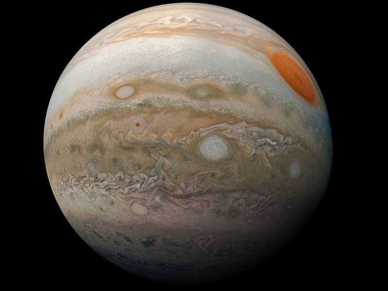

Jupiter is the fifth planet from the Sun and the largest in the Solar System. It is a gas giant with a mass more than two and a half times that
of all the other planets in the Solar System combined, but slightly less than one-thousandth the mass of the Sun. Jupiter is the third-brightest
natural object in the Earth's night sky after the Moon and Venus. It has been observed since pre-historic times and is named after the Roman god
Jupiter, the king of the gods, because of its observed size.
1 / 4
2 / 4
3 / 4
4 / 4

Jupiter is primarily composed of hydrogen, but helium constitutes one quarter of its mass and one tenth of its volume. It likely has a rocky core of heavier
elements, but like the other giant planets, Jupiter lacks a well-defined solid surface. The on-going contraction of its interior generates heat greater
than the amount received from the Sun. Because of its rapid rotation, the planet's shape is that of an oblate spheroid; it has a slight but noticeable
bulge around the equator. The outer atmosphere is visibly segregated into several bands at different latitudes, with turbulence and storms along their
interacting boundaries. A prominent result of this is the Great Red Spot, a giant storm that is known to have existed since at least the 17th century,
when it was first seen by telescope.
Surrounding Jupiter is a faint planetary ring system and a powerful magnetosphere. Jupiter's magnetic tail is nearly 800 million km long, covering the
entire distance to Saturn's orbit. Jupiter has 80 known moons and possibly many more, including the four large Galilean moons discovered by Galileo
Galilei in 1610. Ganymede, the largest of these, has a diameter greater than that of the planet Mercury.
Pioneer 10 was the first spacecraft to visit Jupiter, making its closest approach to the planet in December 1973. Jupiter has since been explored
on a number of occasions by robotic spacecraft, beginning with the Pioneer and Voyager flyby missions from 1973 to 1979, and later by the Galileo orbiter,
which arrived at Jupiter in 1995. In 2007, Jupiter was visited by the New Horizons probe, which used Jupiter's gravity to increase its speed and bend
its trajectory en route to Pluto. The latest probe to visit the planet, Juno, entered orbit around Jupiter in July 2016. Future targets for
exploration in the Jupiter system include the probable ice-covered liquid ocean of the moon Europa.
Formation and migration
Jupiter is most likely the oldest planet in the Solar System. Current models of Solar System formation suggest that Jupiter formed at or
beyond the snow line; a distance from the early Sun where the temperature is sufficiently cold for volatiles such as water to condense into solids.
It first assembled a large solid core before accumulating its gaseous atmosphere. As a consequence, the core must have formed before the solar nebula
began to dissipate after 10 million years. Formation models suggest Jupiter grew to 20 times the mass of the Earth in under a million years.
The orbiting mass created a gap in the disk, thereafter slowly increasing to 50 Earth masses in 3–4 million years.
According to the "grand tack hypothesis", Jupiter would have begun to form at a distance of roughly 3.5 AU. As the young planet accreted mass,
interaction with the gas disk orbiting the Sun and orbital resonances with Saturn caused it to migrate inward. This would have upset the
orbits of what are believed to be super-Earths orbiting closer to the Sun, causing them to collide destructively. Saturn would later have begun
to migrate inwards too, much faster than Jupiter, leading to the two planets becoming locked in a 3:2 mean motion resonance at approximately 1.5
AU. This in turn would have changed the direction of migration, causing them to migrate away from the Sun and out of the inner system to their
current locations. These migrations would have occurred over an 800,000 year time period, with all of this happening over a time period
of up to 6 million years after Jupiter began to form (3 million being a more likely figure). This departure would have allowed the formation
of the inner planets from the rubble, including Earth.
However, the formation timescales of terrestrial planets resulting from the grand tack hypothesis appear inconsistent with the measured
terrestrial composition. Moreover, the likelihood that the outward migration actually occurred in the solar nebula is very low.
In fact, some models predict the formation of Jupiter's analogues whose properties are close to those of the planet at the current epoch.
Other models have Jupiter forming at distances much further out, such as 18 AU. In fact, based on Jupiter's composition, researchers
have made the case for an initial formation outside the molecular nitrogen (N2) snowline, which is estimated at 20-30 AU, and
possibly even outside the argon snowline, which may be as far as 40 AU. Having formed at one of these extreme distances, Jupiter would
then have migrated inwards to its current location. This inward migration would have occurred over a roughly 700,000 year time period,
during an epoch approximately 2–3 million years after the planet began to form. Saturn, Uranus and Neptune would have formed even further out
than Jupiter, and Saturn would also have migrated inwards.
Physical characteristics
Jupiter is one of the two gas giants, being primarily composed of gas and liquid rather than solid matter. It is the largest planet in the
Solar System, with a diameter of 142,984 km (88,846 mi) at its equator. The average density of Jupiter, 1.326 g/cm3, is the second highest
of the giant planets, but lower than those of the four terrestrial planets.
Composition
Jupiter's upper atmosphere is about 90% hydrogen and 10% helium by volume. Since helium atoms are more massive than hydrogen molecules,
Jupiter's atmosphere is approximately 75% hydrogen and 24% helium by mass, with the remaining one percent consisting of other elements.
The atmosphere contains trace amounts of methane, water vapour, ammonia, and silicon-based compounds. There are also fractional amounts
of carbon, ethane, hydrogen sulfide, neon, oxygen, phosphine, and sulfur. The outermost layer of the atmosphere contains crystals of
frozen ammonia. Through infrared and ultraviolet measurements, trace amounts of benzene and other hydrocarbons have also been found.
The interior of Jupiter contains denser materials—by mass it is roughly 71% hydrogen, 24% helium, and 5% other elements.
The atmospheric proportions of hydrogen and helium are close to the theoretical composition of the primordial solar nebula. Neon
in the upper atmosphere only consists of 20 parts per million by mass, which is about a tenth as abundant as in the Sun. Helium
is also depleted to about 80% of the Sun's helium composition. This depletion is a result of precipitation of these elements as
helium-rich droplets deep in the interior of the planet.
Based on spectroscopy, Saturn is thought to be similar in composition to Jupiter, but the other giant planets Uranus and Neptune
have relatively less hydrogen and helium and relatively more of the next most abundant elements, including oxygen, carbon, nitrogen,
and sulfur. As their volatile compounds are mainly in ice form, they are called ice giants.
Mass and size
Jupiter's mass is 2.5 times that of all the other planets in the Solar System combined—this is so massive that its barycentre with
the Sun lies above the Sun's surface at 1.068 solar radii from the Sun's centre. Jupiter is much larger than Earth and considerably
less dense: its volume is that of about 1,321 Earths, but it is only 318 times as massive. Jupiter's radius is about one tenth
the radius of the Sun, and its mass is one thousandth the mass of the Sun, so the densities of the two bodies are similar. A
"Jupiter mass" (MJ or MJup) is often used as a unit to describe masses of other objects, particularly extrasolar planets and brown dwarfs.
For example, the extrasolar planet HD 209458 b has a mass of 0.69 MJ, while Kappa Andromedae b has a mass of 12.8 MJ.
Theoretical models indicate that if Jupiter had much more mass than it does at present, it would shrink. For small changes in mass,
the radius would not change appreciably, and above 160% of the current mass the interior would become so much more compressed under the
increased pressure that its volume would decrease despite the increasing amount of matter. As a result, Jupiter is thought to have about as
large a diameter as a planet of its composition and evolutionary history can achieve. The process of further shrinkage with increasing
mass would continue until appreciable stellar ignition was achieved, as in high-mass brown dwarfs having around 50 Jupiter masses.
Although Jupiter would need to be about 75 times more massive to fuse hydrogen and become a star, the smallest red dwarf is only about
30 percent larger in radius than Jupiter. Despite this, Jupiter still radiates more heat than it receives from the Sun; the amount
of heat produced inside it is similar to the total solar radiation it receives. This additional heat is generated by the Kelvin–Helmholtz
mechanism through contraction. This process causes Jupiter to shrink by about 1 mm/yr. When formed, Jupiter was hotter and was about
twice its current diameter.
Internal structure
Before the early 21st century, most scientists expected Jupiter to either consist of a dense core, a surrounding layer of liquid metallic
hydrogen (with some helium) extending outward to about 80% of the radius of the planet, and an outer atmosphere consisting predominantly
of molecular hydrogen, or perhaps to have no core at all, consisting instead of denser and denser fluid (predominantly molecular and metallic
hydrogen) all the way to the center, depending on whether the planet accreted first as a solid body or collapsed directly from the gaseous
protoplanetary disk. When the Juno mission arrived in July 2016, it found that Jupiter has a very diffuse core that mixes into its mantle.
A possible cause is an impact from a planet of about ten Earth masses a few million years after Jupiter's formation, which would have disrupted
an originally solid Jovian core. It is estimated that the core is 30–50% of the planet's radius, and contains heavy elements 7–25 times
the mass of Earth.
Above the layer of metallic hydrogen lies a transparent interior atmosphere of hydrogen. At this depth, the pressure and temperature
are above molecular hydrogen's critical pressure of 1.3 MPa and critical temperature of only 33 K. In this state, there are no distinct
liquid and gas phases—hydrogen is said to be in a supercritical fluid state. It is convenient to treat hydrogen as gas extending downward
from the cloud layer to a depth of about 1,000 km, and as liquid in deeper layers. Physically, there is no clear boundary—the gas smoothly
becomes hotter and denser as depth increases.Rain-like droplets of helium and neon precipitate downward through the lower atmosphere,
depleting the abundance of these elements in the upper atmosphere. Calculations suggest that helium drops separate from metallic hydrogen
at a radius of 60,000 km (11,000 km below the cloudtops) and merge again at 50,000 km (22,000 km beneath the clouds). Rainfalls of diamonds
have been suggested to occur, as well as on Saturn and the ice giants Uranus and Neptune.
The temperature and pressure inside Jupiter increase steadily inward, this is observed in microwave emission and required because the
heat of formation can only escape by convection. At the pressure level of 10 bars (1 MPa), the temperature is around 340 K (67 °C; 152 °F).
The hydrogen is always supercritical (that is, it never encounters a first-order phase transition) even as it changes gradually from
a molecular fluid to a metallic fluid at around 100–200 GPa, where the temperature is perhaps 5,000 K (4,730 °C; 8,540 °F). The
temperature of Jupiter's diluted core is estimated at around 20,000 K (19,700 °C; 35,500 °F) or more with an estimated pressure
of around 4,500 GPa.
Atmosphere
Jupiter has the deepest planetary atmosphere in the Solar System, spanning over 5,000 km (3,000 mi) in altitude.
Cloud layers
Jupiter is perpetually covered with clouds composed of ammonia crystals, and possibly ammonium hydrosulfide. The clouds are in the
tropopause and are in bands of different latitudes, known as tropical regions. These are subdivided into lighter-hued zones and darker
belts. The interactions of these conflicting circulation patterns cause storms and turbulence. Wind speeds of 100 metres per second
(360 km/h; 220 mph) are common in zonal jet streams. The zones have been observed to vary in width, colour and intensity from year
to year, but they have remained sufficiently stable for scientists to name them.
The cloud layer is about 50 km (31 mi) deep, and consists of at least two decks of clouds: a thick lower deck and a thin
clearer region. There may also be a thin layer of water clouds underlying the ammonia layer. Supporting the presence of water
clouds are the flashes of lightning detected in the atmosphere of Jupiter. These electrical discharges can be up to a thousand
times as powerful as lightning on Earth. The water clouds are assumed to generate thunderstorms in the same way as terrestrial
thunderstorms, driven by the heat rising from the interior. The Juno mission revealed the presence of "shallow lightning"
which originates from ammonia-water clouds relatively high in the atmosphere. These discharges carry "mushballs" of water-ammonia
slushes covered in ice, which fall deep into the atmosphere. Upper-atmospheric lightning has been observed in Jupiter's upper
atmosphere, bright flashes of light that last around 1.4 milliseconds. These are known as "elves" or "sprites" and appear blue or
pink due to the hydrogen.
The orange and brown colours in the clouds of Jupiter are caused by upwelling compounds that change colour when they are
exposed to ultraviolet light from the Sun. The exact makeup remains uncertain, but the substances are thought to be phosphorus,
sulfur or possibly hydrocarbons. These colourful compounds, known as chromophores, mix with the warmer lower deck of
clouds. The zones are formed when rising convection cells form crystallising ammonia that masks out these lower clouds from view.
Jupiter's low axial tilt means that the poles always receive less solar radiation than the planet's equatorial region. Convection
within the interior of the planet transports energy to the poles, balancing out the temperatures at the cloud layer.
Great Red Spot and other vortices
The best known feature of Jupiter is the Great Red Spot, a persistent anticyclonic storm located 22° south of the equator. It is known
to have existed since at least 1831, and possibly since 1665. Images by the Hubble Space Telescope have shown as many as two "red
spots" adjacent to the Great Red Spot. The storm is visible through Earth-based telescopes with an aperture of 12 cm or larger.
The oval object rotates counterclockwise, with a period of about six days. The maximum altitude of this storm is about 8 km (5 mi) above
the surrounding cloudtops. The Spot's composition and the source of its red color remain uncertain, although photodissociated ammonia
reacting with acetylene is a robust candidate to explain the coloration.
The Great Red Spot is larger than the Earth. Mathematical models suggest that the storm is stable and will be a permanent feature
of the planet. However, it has significantly decreased in size since its discovery. Initial observations in the late 1800s showed it
to be approximately 41,000 km (25,500 mi) across. By the time of the Voyager flybys in 1979, the storm had a length of 23,300 km (14,500 mi)
and a width of approximately 13,000 km (8,000 mi). Hubble observations in 1995 showed it had decreased in size to 20,950 km (13,020 mi),
and observations in 2009 showed the size to be 17,910 km (11,130 mi). As of 2015, the storm was measured at approximately 16,500 by 10,940 km
(10,250 by 6,800 mi), and was decreasing in length by about 930 km (580 mi) per year. In October 2021, a Juno flyby mission
utilized two scientific instruments to measure the depth of the Great Red Spot putting it at around 300 - 500 km (186 -310 miles) deep.
Juno missions show that there are several polar cyclone groups at Jupiter's poles. The northern group contains nine cyclones, with a
large one in the center and eight others around it, while its southern counterpart also consists of a center vortex but is surrounded by
five large storms and a single smaller one. These polar structures are caused by the turbulence in Jupiter's
atmosphere and can be compared with the hexagon at Saturn's north pole.
In 2000, an atmospheric feature formed in the southern hemisphere that is similar in appearance to the Great Red Spot, but
smaller. This was created when smaller, white oval-shaped storms merged to form a single feature—these three smaller white ovals
were first observed in 1938. The merged feature was named Oval BA and has been nicknamed "Red Spot Junior." It has since increased
in intensity and changed from white to red.
In April 2017, a "Great Cold Spot" was discovered in Jupiter's thermosphere at its north pole. This feature is 24,000 km (15,000 mi) across,
12,000 km (7,500 mi) wide, and 200 °C (360 °F) cooler than surrounding material. While this spot changes form and intensity over the short term,
it has maintained its general position in the atmosphere for more than 15 years. It may be a giant vortex similar to the Great Red Spot, and
appears to be quasi-stable like the vortices in Earth's thermosphere. Interactions between charged particles generated from Io and the planet's
strong magnetic field likely resulted in redistribution of heat flow, forming the Spot.
Magnetosphere
Jupiter's magnetic field is fourteen times stronger than Earth's, ranging from 4.2 gauss (0.42 mT) at the equator to 10–14 gauss (1.0–1.4 mT)
at the poles, making it the strongest in the Solar System (except for sunspots). This field is thought to be generated by eddy currents—swirling
movements of conducting materials—within the liquid metallic hydrogen core. The volcanoes on the moon Io emit large amounts of sulfur dioxide,
forming a gas torus along the moon's orbit. The gas is ionised in the magnetosphere, producing sulfur and oxygen ions. They, together with hydrogen
ions originating from the atmosphere of Jupiter, form a plasma sheet in Jupiter's equatorial plane. The plasma in the sheet co-rotates with the
planet, causing deformation of the dipole magnetic field into that of a magnetodisk. Electrons within the plasma sheet generate a strong radio
signature that produces bursts in the range of 0.6–30 MHz which are detectable from Earth with consumer-grade shortwave radio receivers.
At about 75 Jupiter radii from the planet, the interaction of the magnetosphere with the solar wind generates a bow shock. Surrounding Jupiter's
magnetosphere is a magnetopause, located at the inner edge of a magnetosheath—a region between it and the bow shock. The solar wind interacts with
these regions, elongating the magnetosphere on Jupiter's lee side and extending it outward until it nearly reaches the orbit of Saturn. The four
largest moons of Jupiter all orbit within the magnetosphere, which protects them from the solar wind.
The magnetosphere of Jupiter is responsible for intense episodes of radio emission from the planet's polar regions. Volcanic activity
on Jupiter's moon Io injects gas into Jupiter's magnetosphere, producing a torus of particles about the planet. As Io moves through this
torus, the interaction generates Alfvén waves that carry ionised matter into the polar regions of Jupiter. As a result, radio waves are
generated through a cyclotron maser mechanism, and the energy is transmitted out along a cone-shaped surface. When Earth intersects this
cone, the radio emissions from Jupiter can exceed the solar radio output.
Orbit and rotation
Jupiter is the only planet whose barycentre with the Sun lies outside the volume of the Sun, though by only 7% of the Sun's radius.
The average distance between Jupiter and the Sun is 778 million km (about 5.2 times the average distance between Earth and the Sun, or 5.2 AU)
and it completes an orbit every 11.86 years. This is approximately two-fifths the orbital period of Saturn, forming a near orbital resonance.
The orbital plane of Jupiter is inclined 1.31° compared to Earth. Because the eccentricity of its orbit is 0.048, Jupiter is slightly over 75
million km nearer the Sun at perihelion than aphelion.
The axial tilt of Jupiter is relatively small, only 3.13°, so its seasons are insignificant compared to those of Earth and Mars.
Jupiter's rotation is the fastest of all the Solar System's planets, completing a rotation on its axis in slightly less than ten hours;
this creates an equatorial bulge easily seen through an amateur telescope. The planet is an oblate spheroid, meaning that the diameter across
its equator is longer than the diameter measured between its poles. On Jupiter, the equatorial diameter is 9,275 km (5,763 mi) longer than
the polar diameter.
Because Jupiter is not a solid body, its upper atmosphere undergoes differential rotation. The rotation of Jupiter's polar atmosphere is
about 5 minutes longer than that of the equatorial atmosphere; three systems are used as frames of reference, particularly when graphing the
motion of atmospheric features. System I applies to latitudes from 10° N to 10° S; its period is the planet's shortest, at 9h 50m 30.0s.
System II applies at all latitudes north and south of these; its period is 9h 55m 40.6s. System III was defined by radio astronomers and
corresponds to the rotation of the planet's magnetosphere; its period is Jupiter's official rotation.
Observation
Jupiter is usually the fourth brightest object in the sky (after the Sun, the Moon, and Venus); at opposition Mars can appear
brighter than Jupiter. Depending on Jupiter's position with respect to the Earth, it can vary in visual magnitude from as bright as
−2.94 at opposition down to −1.66 during conjunction with the Sun. The mean apparent magnitude is −2.20 with a standard deviation
of 0.33. The angular diameter of Jupiter likewise varies from 50.1 to 29.8 arc seconds. Favorable oppositions occur when Jupiter
is passing through perihelion, an event that occurs once per orbit.
Because the orbit of Jupiter is outside that of Earth, the phase angle of Jupiter as viewed from Earth never exceeds 11.5°; thus,
Jupiter always appears nearly fully illuminated when viewed through Earth-based telescopes. It was only during spacecraft missions to
Jupiter that crescent views of the planet were obtained. A small telescope will usually show Jupiter's four Galilean moons and
the prominent cloud belts across Jupiter's atmosphere. A large telescope will show Jupiter's Great Red Spot when it faces Earth.
Exploration
Since 1973, a number of automated spacecraft have visited Jupiter, most notably the Pioneer 10 space probe,
the first spacecraft to get close enough to Jupiter to send back revelations about its properties and phenomena.
Flights to planets within the Solar System are accomplished at a cost in energy, which is described by the net change in
velocity of the spacecraft, or delta-v. Entering a Hohmann transfer orbit from Earth to Jupiter from low Earth orbit requires
a delta-v of 6.3 km/s, which is comparable to the 9.7 km/s delta-v needed to reach low Earth orbit. Gravity assists
through planetary flybys can be used to reduce the energy required to reach Jupiter, albeit at the cost of a significantly
longer flight duration.
Flyby missions
Beginning in 1973, several spacecraft have performed planetary flyby maneuvers that brought them within observation range of Jupiter.
The Pioneer missions obtained the first close-up images of Jupiter's atmosphere and several of its moons. They discovered that the radiation
fields near the planet were much stronger than expected, but both spacecraft managed to survive in that environment. The trajectories of
these spacecraft were used to refine the mass estimates of the Jovian system. Radio occultations by the planet resulted in better measurements
of Jupiter's diameter and the amount of polar flattening.
Six years later, the Voyager missions vastly improved the understanding of the Galilean moons and discovered Jupiter's rings.
They also confirmed that the Great Red Spot was anticyclonic. Comparison of images showed that the Red Spot had changed hue since
the Pioneer missions, turning from orange to dark brown. A torus of ionised atoms was discovered along Io's orbital path, and volcanoes
were found on the moon's surface, some in the process of erupting. As the spacecraft passed behind the planet, it observed flashes
of lightning in the night side atmosphere.
The next mission to encounter Jupiter was the Ulysses solar probe. In February 1992, it performed a flyby maneuver to attain a
polar orbit around the Sun. During this pass, the spacecraft studied Jupiter's magnetosphere. Ulysses has no cameras so no images
were taken. A second flyby six years later was at a much greater distance.
In 2000, the Cassini probe flew by Jupiter on its way to Saturn, and provided higher-resolution images.
The New Horizons probe flew by Jupiter in 2007 for a gravity assist en route to Pluto. The probe's cameras measured
plasma output from volcanoes on Io and studied all four Galilean moons in detail, as well as making long-distance observations
of the outer moons Himalia and Elara.
Galileo mission
The first spacecraft to orbit Jupiter was the Galileo probe, which entered orbit on December 7, 1995. It orbited the planet for
over seven years, conducting multiple flybys of all the Galilean moons and Amalthea. The spacecraft also witnessed the impact of Comet
Shoemaker–Levy 9 as it approached Jupiter in 1994, giving a unique vantage point for the event. Its originally designed capacity was
limited by the failed deployment of its high-gain radio antenna, although extensive information was still gained about the Jovian
system from Galileo.
A 340-kilogram titanium atmospheric probe was released from the spacecraft in July 1995, entering Jupiter's atmosphere on December
7. It parachuted through 150 km (93 mi) of the atmosphere at a speed of about 2,575 km/h (1600 mph) and collected data for 57.6
minutes before the signal was lost at a pressure of about 23 atmospheres and a temperature of 153 °C. It melted thereafter, and
possibly vapourised. The Galileo orbiter itself experienced a more rapid version of the same fate when it was deliberately steered into
the planet on September 21, 2003, at a speed of over 50 km/s to avoid any possibility of it crashing into and possibly contaminating
the moon Europa, which may harbor life.
Data from this mission revealed that hydrogen composes up to 90% of Jupiter's atmosphere. The recorded temperature was more than
300 °C (570 °F) and the windspeed measured more than 644 km/h (>400 mph) before the probes vapourised.
Juno mission
NASA's Juno mission arrived at Jupiter on July 4, 2016, and was expected to complete thirty-seven orbits over the next twenty
months. The mission plan called for Juno to study the planet in detail from a polar orbit. On August 27, 2016, the spacecraft
completed its first fly-by of Jupiter and sent back the first ever images of Jupiter's north pole.
Juno would complete 12 science orbits before the end of its budgeted mission plan, ending July 2018.In June of that
year, NASA extended the mission operations plan to July 2021, and in January of that year the mission was extended to September
2025 with four lunar flybys: one of Ganymede, one of Europa, and two of Io. When Juno reaches the end of the mission,
it will perform a controlled deorbit and disintegrate into Jupiter's atmosphere. During the mission, the spacecraft will be exposed
to high levels of radiation from Jupiter's magnetosphere, which may cause future failure of certain instruments and risk collision
with Jupiter's moons.
Canceled missions and future plans
There has been great interest in studying Jupiter's icy moons in detail because of the possibility of subsurface liquid oceans on Europa,
Ganymede, and Callisto. Funding difficulties have delayed progress. NASA's JIMO (Jupiter Icy Moons Orbiter) was cancelled in 2005. A
subsequent proposal was developed for a joint NASA/ESA mission called EJSM/Laplace, with a provisional launch date around 2020. EJSM/Laplace
would have consisted of the NASA-led Jupiter Europa Orbiter and the ESA-led Jupiter Ganymede Orbiter. However, ESA had formally ended
the partnership by April 2011, citing budget issues at NASA and the consequences on the mission timetable. Instead, ESA planned to go ahead
with a European-only mission to compete in its L1 Cosmic Vision selection.
These plans were realized as the European Space Agency's Jupiter Icy Moon Explorer (JUICE), due to launch in 2023, followed by
NASA's Europa Clipper mission, scheduled for launch in 2024. Other proposed missions include the Chinese National Space Administration's
Interstellar Express, a pair of probes to launch in 2024 that would use Jupiter's gravity to explore either end of the heliosphere, and NASA's
Trident, which would launch in 2025 and use Jupiter's gravity to bend the spacecraft on a path to explore Neptune's moon Triton.
Moons
Jupiter has 80 known natural satellites. Of these, 60 are less than 10 km in diameter. The four largest moons are Io,
Europa, Ganymede, and Callisto, collectively known as the "Galilean moons", and are visible from Earth with binoculars on a clear night.
Galilean moons
The moons discovered by Galileo—Io, Europa, Ganymede, and Callisto—are among the largest in the Solar System. The orbits of three of them
(Io, Europa, and Ganymede) form a pattern known as a Laplace resonance; for every four orbits that Io makes around Jupiter, Europa makes exactly
two orbits and Ganymede makes exactly one. This resonance causes the gravitational effects of the three large moons to distort their orbits into
elliptical shapes, because each moon receives an extra tug from its neighbors at the same point in every orbit it makes. The tidal force from Jupiter,
on the other hand, works to circularise their orbits.
The eccentricity of their orbits causes regular flexing of the three moons' shapes, with Jupiter's gravity stretching them out as they approach
it and allowing them to spring back to more spherical shapes as they swing away. This tidal flexing heats the moons' interiors by friction.
This is seen most dramatically in the volcanic activity of Io (which is subject to the strongest tidal forces), and to a lesser degree
in the geological youth of Europa's surface, which indicates recent resurfacing of the moon's exterior.
The eccentricity of their orbits causes regular flexing of the three moons' shapes, with Jupiter's gravity stretching
them out as they approach it and allowing them to spring back to more spherical shapes as they swing away. This tidal
flexing heats the moons' interiors by friction. This is seen most dramatically in the volcanic activity of Io (which
is subject to the strongest tidal forces), and to a lesser degree in the geological youth of Europa's surface, which
indicates recent resurfacing of the moon's exterior.
Jupiter's moons were traditionally classified into four groups of four, based on commonality of their orbital elements. This
picture has been complicated by the discovery of numerous small outer moons since 1999. Jupiter's moons are currently divided into
several different groups, although there are several moons which are not part of any group.
The eight innermost regular moons, which have nearly circular orbits near the plane of Jupiter's equator, are thought to have
formed alongside Jupiter, whilst the remainder are irregular moons and are thought to be captured asteroids or fragments of captured
asteroids. Irregular moons that belong to a group share similar orbital elements and thus may have a common origin, perhaps as a larger
moon or captured body that broke up.
The inner group of four small moons all have diameters of less than 200 km, orbit at radii less than 200,000 km,
and have orbital inclinations of less than half a degree.
These four moons, discovered by Galileo Galilei and by Simon Marius in parallel, orbit between 400,000 and 2,000,000 km,
and are some of the largest moons in the Solar System.
A dispersed and only vaguely distinct retrograde group that covers all the outermost moons.
Planetary rings
Jupiter has a faint planetary ring system composed of three main segments: an inner torus of particles known as the halo,
a relatively bright main ring, and an outer gossamer ring. These rings appear to be made of dust, rather than ice as with
Saturn's rings. The main ring is probably made of material ejected from the satellites Adrastea and Metis. Material that
would normally fall back to the moon is pulled into Jupiter because of its strong gravitational influence. The orbit of the
material veers towards Jupiter and new material is added by additional impacts. In a similar way, the moons Thebe and Amalthea
probably produce the two distinct components of the dusty gossamer ring. There is also evidence of a rocky ring strung along
Amalthea's orbit which may consist of collisional debris from that moon.
Interaction with the Solar System
Along with the Sun, the gravitational influence of Jupiter has helped shape the Solar System. The orbits of most
of the system's planets lie closer to Jupiter's orbital plane than the Sun's equatorial plane (Mercury is the only planet
that is closer to the Sun's equator in orbital tilt). The Kirkwood gaps in the asteroid belt are mostly caused by Jupiter,
and the planet may have been responsible for the Late Heavy Bombardment event in the inner Solar System's history.
In addition to its moons, Jupiter's gravitational field controls numerous asteroids that have settled into the regions
of the Lagrangian points preceding and following Jupiter in its orbit around the Sun. These are known as the Trojan asteroids,
and are divided into Greek and Trojan "camps" to commemorate the Iliad. The first of these, 588 Achilles, was discovered by Max
Wolf in 1906; since then more than two thousand have been discovered. The largest is 624 Hektor.
Most short-period comets belong to the Jupiter family—defined as comets with semi-major axes smaller than Jupiter's. Jupiter
family comets are thought to form in the Kuiper belt outside the orbit of Neptune. During close encounters with Jupiter their
orbits are perturbed into a smaller period and then circularised by regular gravitational interaction with the Sun and Jupiter.
Due to the magnitude of Jupiter's mass, the centre of gravity between it and the Sun lies just above the Sun's surface, the
only planet in the Solar System for which this is true.
Impacts
Jupiter has been called the Solar System's vacuum cleaner because of its immense gravity well and location
near the inner Solar System there are more impacts on Jupiter, such as comets, than on the Solar System's other planets.
It was thought that Jupiter partially shielded the inner system from cometary bombardment. However, recent computer
simulations suggest that Jupiter does not cause a net decrease in the number of comets that pass through the inner Solar
System, as its gravity perturbs their orbits inward roughly as often as it accretes or ejects them. This topic remains
controversial among scientists, as some think it draws comets towards Earth from the Kuiper belt while others think that
Jupiter protects Earth from the Oort cloud. Jupiter experiences about 200 times more asteroid and comet impacts than Earth.
A 1997 survey of early astronomical records and drawings suggested that a certain dark surface feature discovered by
astronomer Giovanni Cassini in 1690 may have been an impact scar. The survey initially produced eight more candidate sites
as potential impact observations that he and others had recorded between 1664 and 1839. It was later determined, however,
that these candidate sites had little or no possibility of being the results of the proposed impacts.